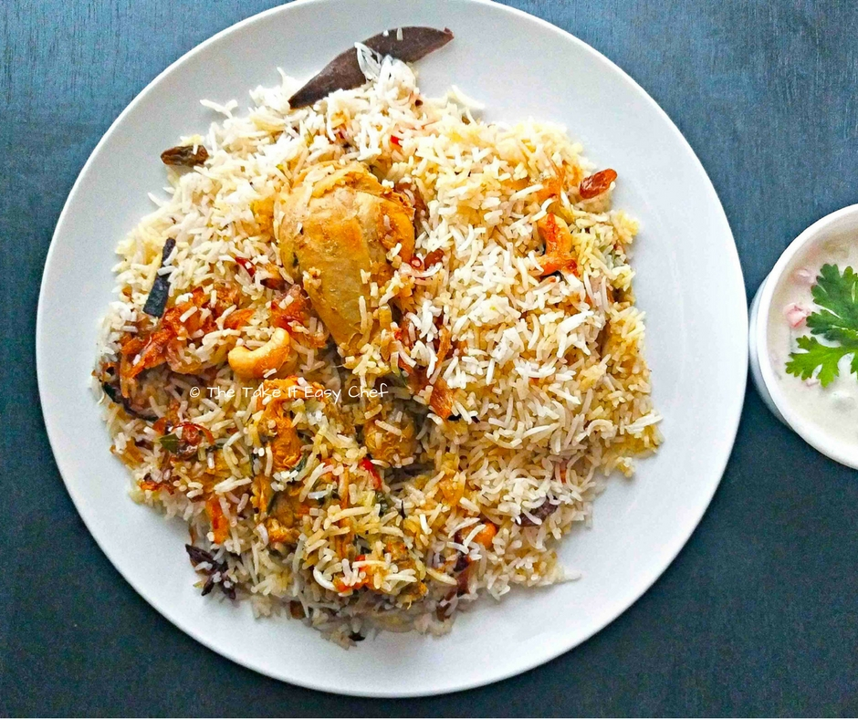

Story of the Recipe
This recipe is inspired from a weekend cooking session with my cousin and her friend, who is from Thalassery. She had her mom’s recipe, and we had all the ingredients. She led the cooking, while we helped with prepping the ingredients. The results were amazing. That was one of the best home cooked biriyanis that I have ever come across!
This recipe is a slightly altered version I have been working on. I am planning to revisit this soon. I hope this rendition has done justice to the original!
Thalassery Chicken Biriyani served with Raita